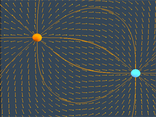

The Falling Coil simulationThis simulation shows the dynamics of a conducting non-magnetic ring falling on the axis of a fixed magnet. As the ring falls under gravity towards the magnet, the changing magnetic flux through the ring gives rise to a current which is in a direction such as to slow the fall of the ring, by Lenz's Law. The ring has mass m, resistance R, and self-inductance L, and the magnet has magnetic dipole moment M. You can vary the resistance of the ring and the strength of the magnetic dipole moment to see how these parameters affect the dynamics of the ring. If the resistance is zero and the dipole moment is strong enough, the ring will levitate above the magnet. If the resistance is non-zero, even though small, the ring will eventually fall past the magnet. We also show the induced current in the ring in the meter on the lower left. Start Simulation(Note: you must have Java™ J2SE v1.4+ JRE installed) |
|
|  | Two Point Charge simulationThis java simulation illustrates the field pattern created by two point charges with opposite signs of charge. In this simulation, the position and charge of each particle can be modified in real time, and the field configuration will update itself accordingly. All three field visualization techniques can be applied to show the overall electric field of the two-charge configuration: vector field, field lines, and "grass seeds". Start Simulation(Note: you must have Java™ J2SE v1.4+ JRE installed) |
Generating Plane Wave Radiation simulationThis simulation shows the electromagnetic radiation generated by an oscillating sheet of charge. Start Simulation(Note: you must have Java™ J2SE v1.4+ JRE installed) |